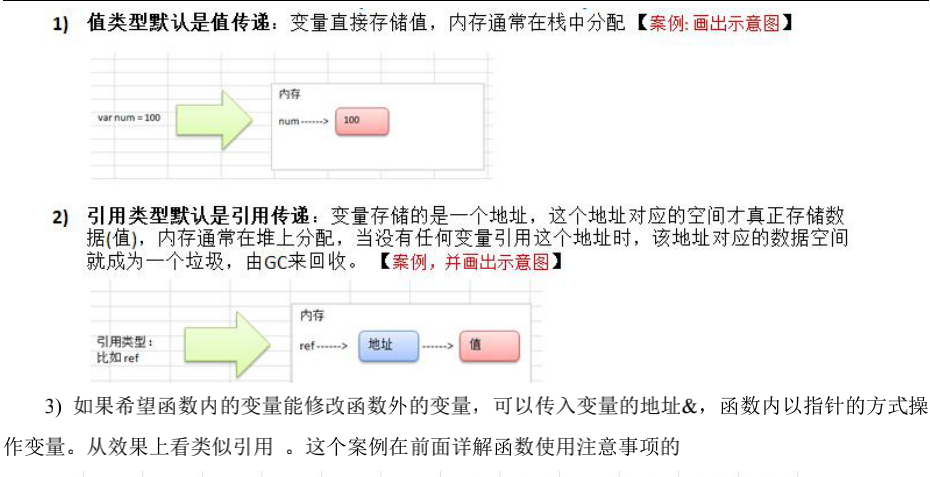

1 值类型与引用类型
值类型
基本数据类型（如：int系列、float系列、bool、string）；数组；结构体
引用类型
指针；slice切片；map；管道chan；接口interface
*值传递与引用传递

2 函数的参数传递
函数如果使用参数，该参数变量称为函数的形参。形参就像定义在函数体内的局部变量。
调用函数，可以通过两种方式来传递参数，即值传递和引用传递，或者叫作传值和传引用。
值传递（传值）
值传递是指在调用函数时将实际参数复制一份传递到函数中，这样在函数中如果对参数进行修改，将不会影响到原内容数据。
默认情况下，Go语言使用的是值传递，即在调用过程中不会影响到原内容数据。
每次调用函数，都将实参复制一份再传递到函数中。每次都复制一份，性能会下降，但是Go 语言中使用指针和值传递配合就避免了性能降低问题，也就是通过传指针参数来解决实参复制的问题。
引用传递（传引用）
引用传递是指在调用函数时将实际参数的地址传递到函数中，那么在函数中对参数所进行的修改，将影响到原内容数据。
严格来说Go语言只有值传递这一种传参方式，Go语言是没有引用传递的。
Go语言中可以借助传指针来实现引用传递的效果。函数参数使用指针参数，传参的时候其实是复制一份指针参数，也就是复制了一份变量地址。
函数的参数如果是指针，当函数调用时，虽然参数仍然是按复制传递的，但是此时仅仅只是复制一个指针，也就是一个内存地址，这样就不用担心实参复制造成的内存浪费、时间开销、性能降低。
引用传递的作用如下：
- 传指针使得多个函数能操作同一个对象。
- 传指针更轻量级（8 bytes），只需要传内存地址。如果参数是非指针参数，那么值传递的过程中，每次在复制上面就会花费相对较多的系统开销（内存和时间）。所以要传递大的结构体的时候，用指针是一个明智的选择。
Go语言中slice、map、chan类型的实现机制都类似指针，所以可以直接传递，而不必取地址后传递指针。
函数传int类型的值与引用的对比：
package main
import "fmt"
func main(){
a := 10
fmt.Printf("1. 变量a的内存地址:%p,值为%v \n",&a,a)
fmt.Printf("======int型变量a的内存地址:%p \n",a)
changeIntVal(a)
fmt.Printf("2. changeIntVal函数之后,变量a的内存地址:%p,值为:%v \n",&a,a) // a还是10
changeIntPtr(&a)
fmt.Printf("3. changeIntPtr函数之后,变量a的内存地址:%p,值为:%v \n",&a,a) // a变成了50
}
//函数传int类型的值
func changeIntVal(a int){
fmt.Printf("------changeIntVal函数内:值参数a的内存地址:%p,值为:%v\n",&a,a)
// 改变a
a = 90
}
//函数传引用
func changeIntPtr(a *int){
fmt.Printf("------changeIntPtr函数内:指针参数a的内存地址:%p,值为:%v\n",&a,a)
// 改变a
*a = 50
}
/*
1. 变量a的内存地址:0xc0000b4008,值为10
======int型变量a的内存地址:%!p(int=10)
------changeIntVal函数内:值参数a的内存地址:0xc0000b4020,值为:10
2. changeIntVal函数之后,变量a的内存地址:0xc0000b4008,值为:10
------changeIntPtr函数内:指针参数a的内存地址:0xc0000ae020,值为:0xc0000b4008
3. changeIntPtr函数之后,变量a的内存地址:0xc0000b4008,值为:50
*/
函数传slice类型的值与引用的对比
package main
import "fmt"
func main(){
a := []int{1,2,3,4}
fmt.Printf("1. 变量a的内存地址:%p,值为%v \n",&a,a)
fmt.Printf("======int型变量a的内存地址:%p \n",a)
changeIntVal(a)
fmt.Printf("2. changeIntVal函数之后,变量a的内存地址:%p,值为:%v \n",&a,a) // a变成了[90 2 3 4]
changeIntPtr(&a)
fmt.Printf("3. changeIntPtr函数之后,变量a的内存地址:%p,值为:%v \n",&a,a) // a变成了[50 2 3 4]
}
//函数传int类型的值
func changeIntVal(a []int){
fmt.Printf("------changeIntVal函数内:值参数a的内存地址:%p,值为:%v\n",&a,a)
// 改变a
a[0] = 90
}
//函数传引用
func changeIntPtr(a *[]int){
fmt.Printf("------changeIntPtr函数内:指针参数a的内存地址:%p,值为:%v\n",&a,a)
// 改变a
(*a)[0] = 50
}
/*
1. 变量a的内存地址:0xc00000c080,值为[1 2 3 4]
======int型变量a的内存地址:0xc000018100
------changeIntVal函数内:值参数a的内存地址:0xc00000c0e0,值为:[1 2 3 4]
2. changeIntVal函数之后,变量a的内存地址:0xc00000c080,值为:[90 2 3 4]
------changeIntPtr函数内:指针参数a的内存地址:0xc00000e030,值为:&[90 2 3 4]
3. changeIntPtr函数之后,变量a的内存地址:0xc00000c080,值为:[50 2 3 4]
*/
函数传数组，其类型的值与引用的对比
package main
import "fmt"
func main(){
a := [4]int{1,2,3,4}
fmt.Printf("1. 变量a的内存地址:%p,值为%v \n",&a,a)
fmt.Printf("======int型变量a的内存地址:%p \n",a)
changeIntVal(a)
fmt.Printf("2. changeIntVal函数之后,变量a的内存地址:%p,值为:%v \n",&a,a) // a没变 还是[1 2 3 4]
changeIntPtr(&a)
fmt.Printf("3. changeIntPtr函数之后,变量a的内存地址:%p,值为:%v \n",&a,a) // a变成了[50 2 3 4]
}
//函数传int类型的值
func changeIntVal(a [4]int){
fmt.Printf("------changeIntVal函数内:值参数a的内存地址:%p,值为:%v\n",&a,a)
// 改变a
a[0] = 90
}
//函数传引用
func changeIntPtr(a *[4]int){
fmt.Printf("------changeIntPtr函数内:指针参数a的内存地址:%p,值为:%v\n",&a,a)
// 改变a
(*a)[0] = 50
}
/*
1. 变量a的内存地址:0xc0000b8000,值为[1 2 3 4]
======int型变量a的内存地址:%!p([4]int=[1 2 3 4])
------changeIntVal函数内:值参数a的内存地址:0xc0000b8080,值为:[1 2 3 4]
2. changeIntVal函数之后,变量a的内存地址:0xc0000b8000,值为:[1 2 3 4]
------changeIntPtr函数内:指针参数a的内存地址:0xc0000ae020,值为:&[1 2 3 4]
3. changeIntPtr函数之后,变量a的内存地址:0xc0000b8000,值为:[50 2 3 4]
*/
函数传结构体
package main
import "fmt"
type Teacher struct{
name string
age int
married bool
}
func main(){
a := Teacher{"wanghe",22,false}
fmt.Printf("1. 变量a的内存地址:%p,值为%v \n",&a,a)
fmt.Printf("======int型变量a的内存地址:%p \n",a)
changeIntVal(a)
fmt.Printf("2. changeIntVal函数之后,变量a的内存地址:%p,值为:%v \n",&a,a) // a没变 还是{wanghe 22 false}
changeIntPtr(&a)
fmt.Printf("3. changeIntPtr函数之后,变量a的内存地址:%p,值为:%v \n",&a,a) // a变成了{sasuke 32 false}
}
//函数传int类型的值
func changeIntVal(a Teacher){
fmt.Printf("------changeIntVal函数内:值参数a的内存地址:%p,值为:%v\n",&a,a)
// 改变a
a.name = "naruto"
a.age = 23
}
//函数传引用
func changeIntPtr(a *Teacher){
fmt.Printf("------changeIntPtr函数内:指针参数a的内存地址:%p,值为:%v\n",&a,a)
// 改变a
a.name = "sasuke"
a.age = 32
}
/*
1. 变量a的内存地址:0xc00000c080,值为{wanghe 22 false}
======int型变量a的内存地址:%!p(main.Teacher={wanghe 22 false})
------changeIntVal函数内:值参数a的内存地址:0xc00000c0e0,值为:{wanghe 22 false}
2. changeIntVal函数之后,变量a的内存地址:0xc00000c080,值为:{wanghe 22 false}
------changeIntPtr函数内:指针参数a的内存地址:0xc00000e030,值为:&{wanghe 22 false}
3. changeIntPtr函数之后,变量a的内存地址:0xc00000c080,值为:{sasuke 32 false}
*/
值传递与引用传递的细节问题
Go语言中所有的传参都是值传递（传值），都是一个副本。
副本的内容有的是值类型（int、string、bool、array、struct属于值类型），这样在函数中就无法修改原内容数据；
有的是引用类型（pointer、 slice、map、chan属于引用类型），这样就可以修改原内容数据。
是否可以修改原内容数据，和传值、传引用没有必然的关系。在C++中，传引用肯定是可以修改原内容数据的；在Go语言里，虽然只有传值，但是也可以修改原内容数据，因为参数可以是引用类型。
传引用和引用类型是两个概念。虽然Go语言只有传值一种方式，但是可以通过传引用类型变量达到与传引用一样的效果。
3 Go语言异常处理
为了保证程序的稳定性、可调试性，为了方便维护者阅读和理解，降低维护成本，Go语言提供了异常处理。
3.0 错误处理
Go中引入的处理方式为：defer、panic、recover
简单描述：
Go中可以抛出一个panic异常，然后在defer中通过recover捕获这个异常，然后正常处理。
package main
import "fmt"
func test(){
// 使用 defer + recover 来捕获和处理异常
defer func(){
err := recover() // recover()内置函数，可以捕获异常
if err != nil{ // 说明捕获到错误
fmt.Println("err= ",err)
}
}()
num1 := 10
num2 := 0
res := num1 / num2
fmt.Println("res= ",res)
}
func main() {
test() // err= runtime error: integer divide by zero
}
错误处理的好处
进行错误处理后，程序不会轻易挂掉，如果加入预警代码，就可以让程序更加的健壮。
3.0 自定义错误处理
使用errors.New和panic内置函数。
（1）errors.New("错误说明"),会返回一个error类型的值，表示一个错误。
（2）panic内置函数，接受一个interface{}类型的值（也就是任何类型的值）作为参数。可以接受error类型的变量，输出错误信息并退出程序
func readConf(name string) (err error){
if name == "config.ini"{
// 正常读取
return nil
}else{
// 返回一个自定义错误
return errors.New("读取文件错误")
}
}
3.1 error ***
error接口
错误是指程序中出现不正常的情况，从而导致程序无法正常运行。假设尝试打开一个文件，文件系统中不存在这个文件。这是一个异常情况，它表示为一个错误。
Go语言通过内置的错误类型提供了非常简单的错误处理机制，即error接口。该接口的定义如下。
type error interface {
Error() string
}
error本质上是一个接口类型，其中包含一个Error()方法，错误值可以存储在变量中，通过函数返回。
它必须是函数返回的最后一个值。
在Go语言中处理错误的方式通常是将返回的错误与nil进行比较。nil值表示没有发生错误，而非nil值表示出现错误。如果不是nil，需打印输出错误。
使用error接口的示例：
package main
import (
"fmt"
"math"
"errors"
"os"
)
func main(){
// 异常情况1
res := math.Sqrt(-100)
fmt.Println(res) // NaN
res, err := Sqrt(-100)
if err != nil{
fmt.Println(err)
}else{
fmt.Println(res)
}
// 异常情况2
res, err = Divide(100,0)
if err != nil{
fmt.Println(err.Error())
}else{
fmt.Println(res)
}
// 异常情况3 打开不存在的文件
f, err := os.Open("./abx.txt")
if err != nil{
fmt.Println(err)
}else{
fmt.Println(f.Name(),"该文件被成功打开！")
}
}
// 定义平方根运算函数
func Sqrt(f float64) (float64, error){
if f < 0{
return 0, errors.New("负数不可以获取平方根")
}else{
return math.Sqrt(f), nil
}
}
// 定义除法运算函数
func Divide(dividee float64, divider float64)(float64, error){
if divider == 0{
return 0, errors.New("除数不可以为0！")
}else{
return dividee / divider, nil
}
}
/*
NaN
负数不可以获取平方根
除数不可以为0！
open ./abx.txt: no such file or directory
*/
创建error对象
结构体只要实现了Error() string这种格式的方法，就代表实现了该错误接口，返回值为错误的具体描述。
通常程序会发生可预知的错误，所以Go语言errors包对外提供了可供用户自定义的方法，errors包下的New()函数返回error对象，errors.New()函数创建新的错误。errors包内代码如下：

Go语言的errors.go源码定义了一个结构体，名为errorString，它拥有一个Error()方法，实现了error接口。同时该包向外暴露了一个New()函数，该函数参数为字符串，返回值为error类型。
fmt包下的Errorf()函数返回error对象，它本质上还是调用errors.New()。使用格式如下：
接下来通过一个案例演示创建error的方式：
package main
import (
"errors"
"fmt"
)
func main() {
// 1. 创建error对象的方式1
err1 := errors.New("自己创建的错误！")
fmt.Println("err1>>> ",err1)//自己创建的错误！
fmt.Println("err1.Error()>>> ",err1.Error())//自己创建的错误！
fmt.Printf("err1的类型：%T\n ",err1)//*errors.errorString
fmt.Println("----------------")
// 2. 创建error对象的方式2
err2 := fmt.Errorf("错误的类型%d",101)
fmt.Println("err2>>> ",err2)//错误的类型101
fmt.Println("err2.Error()>>> ",err2.Error())//错误的类型101
fmt.Printf("err2的类型：%T\n ",err2)//*errors.errorString
fmt.Println("----------------")
//error对象在函数中的使用
res, err3 := checkAge(-12)
if err3 != nil{
fmt.Println("err3>>> ",err3)//输入的年龄为：-12，是负数！
fmt.Println("err3.Error()>>> ",err3.Error())//输入的年龄为：-12，是负数！
}else{
fmt.Println(res)
}
}
// 设计一个函数验证年龄，如果是负数，则返回error
func checkAge(age int) (string, error){
if age < 0{
err := fmt.Errorf("输入的年龄为：%d，是负数！",age)
return "", err
}else{
return fmt.Sprintf("输入的年龄是：%d",age), nil
}
}
自定义错误 ***
自定义错误的实现步骤如下：
- 定义一个结构体，表示自定义错误的类型。
- 让自定义错误类型实现error接口：Error() string。
- 定义一个返回error的函数。根据程序实际功能而定。
package main
import (
"fmt"
"time"
)
// 1. 定义结构体，表示自定义错误类型
type MyError struct {
When time.Time
What string
}
// 2. 实现Error()方法
func (e MyError) Error() string{
return fmt.Sprintf("%v : %v",e.When, e.What)
}
// 3. 定义函数，返回error对象。该函数求矩形面积
func getArea(width, length float64) (float64, error){
errorInfo := ""
if width < 0 && length < 0{
errorInfo = fmt.Sprintf("长度：%v，宽度：%v 均为负数！",length, width)
} // 省略其他情况的判断！！！
if errorInfo != ""{
return 0, MyError{time.Now(),errorInfo}
}else{
return width * length, nil
}
}
func main() {
res ,err := getArea(-1,-2)
if err != nil{
fmt.Printf(err.Error())
}else{
fmt.Println("面积为：",res)
}
}
// 2020-10-26 17:10:07.162722 +0800 CST m=+0.000098898 : 长度：-2，宽度：-1 均为负数！
3.2 defer ***
关键字defer用于延迟一个函数或者方法（或者当前所创建的匿名函数）的执行。
defer语句只能出现在函数或方法的内部。
函数中使用defer
在函数中可以添加多个defer语句。
如果有很多调用defer，当函数执行到最后时，这些defer语句会按照逆序执行（报错的时候也会执行），最后该函数返回。
defer的执行顺序及案例
package main
import "fmt"
func main() {
defer funcA()
funcB()
defer funcC()
fmt.Println("main over")
}
func funcA(){
fmt.Println("funcA...")
}
func funcB(){
fmt.Println("funcB...")
}
func funcC(){
fmt.Println("funcC...")
}
/*
funcB...
main over
funcC...
funcA...
*/
defer语句经常被用于处理成对的操作，如打开-关闭、连接-断开连接、加锁-释放锁。
特别是在执行打开资源的操作时，遇到错误需要提前返回，在返回前需要关闭相应的资源，不然很容易造成资源泄露等问题。
package main
import "fmt"
func main() {
s1 := []int{77,88,99,400,234}
getLargest(s1)
}
func finished(){
fmt.Println("结束！")
}
func getLargest(s []int){
// 用defer挂起来
defer finished()
fmt.Println("开始寻找最大的数>>>")
max := 0
for _,v := range s{
if v > max{
max = v
}
}
fmt.Printf("%v 中最大的数为：%v \n",s,max)
}
/*
开始寻找最大的数>>>
[77 88 99 400 234] 中最大的数为：400
结束！
*/
方法中使用defer
延迟并不局限于函数，延迟一个方法调用也是完全合法的。
package main
import "fmt"
type person struct {
firstName, lastName string
}
func (p person) fullName(){
fmt.Printf("%s %s \n",p.firstName,p.lastName)
}
func main() {
p := person{"Steven","Wang"}
// 延迟一个方法
defer p.fullName()
fmt.Println("Welcome！！！")
}
/*
Welcome！！！
Steven Wang
*/
defer参数
延迟函数的参数在执行延迟语句时被执行，而不是在执行实际的函数调用时执行。
package main
import "fmt"
func main() {
a := 5
b := 6
defer printAdd(a, b, true)
a = 10
b = 12
printAdd(a,b,false)
}
func printAdd(a, b int, flag bool){
if flag{
fmt.Printf("延迟执行函数printAdd()，参数a,b分别为：%d,%d \n",a,b)
}else{
fmt.Printf("未延迟执行函数printAdd()，参数a,b为：%d,%d \n",a,b)
}
}
/*
未延迟执行函数printAdd()，参数a,b为：10,12
延迟执行函数printAdd()，参数a,b分别为：5,6
*/
堆栈的推迟
当一个函数有多个延迟调用时，它们被添加到一个堆栈中，并按后进先出（Last InFirst Out，LIFO）的顺序执行。
package main
import "fmt"
func main() {
str := "欢迎学习Golang语言！"
fmt.Printf("原始字符串：%s \n",str)
fmt.Printf("反转后字符串: \n")
ReverseString(str)
}
func ReverseString(str string) {
for _, v := range []rune(str){
defer fmt.Printf("%c",v)
}
}
/*
原始字符串：欢迎学习Golang语言！
反转后字符串:
！言语gnaloG习学迎欢
*/
defer的最佳实践
8.3 panic和recover机制 ***
panic
Go语言追求简洁优雅，Go没有像Java那样的try...catch...finally异常处理机制。Go语言设计者认为，将异常与流程控制混在一起会让代码变得混乱。
panic，让当前的程序进入恐慌，中断程序的执行。panic()是一个内建函数，可以中断原有的控制流程。
panic示例一
package main
import "fmt"
func TestA(){
fmt.Println("func TestA()")
}
func TestB(){
panic("func TestB()")
}
func TestC(){
fmt.Println("func TestC()")
}
func main() {
TestA()
TestB() // TestB()发生异常，中断程序
TestC()
}
/*
func TestA()
panic: func TestB()
goroutine 1 [running]:
main.TestB(...)
/Users/wanghongwei/GoProject/Go语言开发实战/variable.go:10
main.main()
/Users/wanghongwei/GoProject/Go语言开发实战/variable.go:18 +0x96
*/
通常情况下，向程序使用方报告错误状态的方式可以是返回一个额外的error类型值。但是，当遇到不可恢复的错误状态时，如数组访问越界、空指针引用等，这些运行时错误会引起panic异常。这时，上述错误处理方式显然就不适合了。
需要注意的是，不应通过调用panic()函数来报告普通的错误，而应该只把它作为报告致命错误的一种方式。当某些不应该发生的场景发生时调用panic()。
panic示例二：内置的panic()函数引发的panic异常
package main
import "fmt"
func TestA(){
fmt.Println("func TestA()")
}
func TestB(x int){
var a [100] int
a[x] = 1000 // x值为101时，数组越界
}
func TestC(){
fmt.Println("func TestC()")
}
func main() {
TestA()
TestB(101) // TestB()发生异常，中断程序
TestC()
}
/*
func TestA()
panic: runtime error: index out of range [101] with length 100
goroutine 1 [running]:
main.TestB(...)
/Users/wanghongwei/GoProject/Go语言开发实战/variable.go:11
main.main()
/Users/wanghongwei/GoProject/Go语言开发实战/variable.go:19 +0x85
*/
recover
panic异常一旦被引发就会导致程序崩溃。这当然不是程序员愿意看到的，但谁也不能保证程序不会发生任何运行时错误。不过，Go语言为开发者提供了专用于“拦截”运行时panic的内建函数recover()。
recover()可以让进入恐慌流程的Goroutine（可当作线程理解，后续章节会详细讲解）恢复过来并重新获得流程控制权。
需要注意的是，recover()让程序恢复，必须在延迟函数中执行。换言之，recover()仅在延迟函数中有效。
在正常的程序运行过程中，调用 recover()会返回 nil，并且没有其他任何效果。如果当前的Goroutine陷入恐慌，调用recover()可以捕获panic()的输入值，使程序恢复正常运行。
defer + recover处理错误
package main
import "fmt"
func main() {
funcA()
funcB()
funcC()
fmt.Println("main over...")
}
func funcA(){
fmt.Println("这是funcA...")
}
func funcB(){
// defer 一个 匿名函数
defer func(){
if msg := recover();msg != nil{
fmt.Println("恢复啦！获取recover的返回值：",msg)
}
}()
fmt.Println("这是funcB...")
for i := 0; i < 10; i++{
fmt.Println("i:",i)
if i == 5{
panic("funcB恐慌啦！！！")
}
}
}
func funcC(){
// defer 一个 匿名函数
defer func(){
fmt.Println("执行延迟函数...")
msg := recover()
fmt.Println("获取recover的返回值：",msg)
}()
fmt.Println("这是funcC...")
panic("funcC恐慌了！")
}
/*
这是funcA...
这是funcB...
i: 0
i: 1
i: 2
i: 3
i: 4
i: 5
恢复啦！获取recover的返回值： funcB恐慌啦！！！
这是funcC...
执行延迟函数...
获取recover的返回值： funcC恐慌了！
main over...
*/